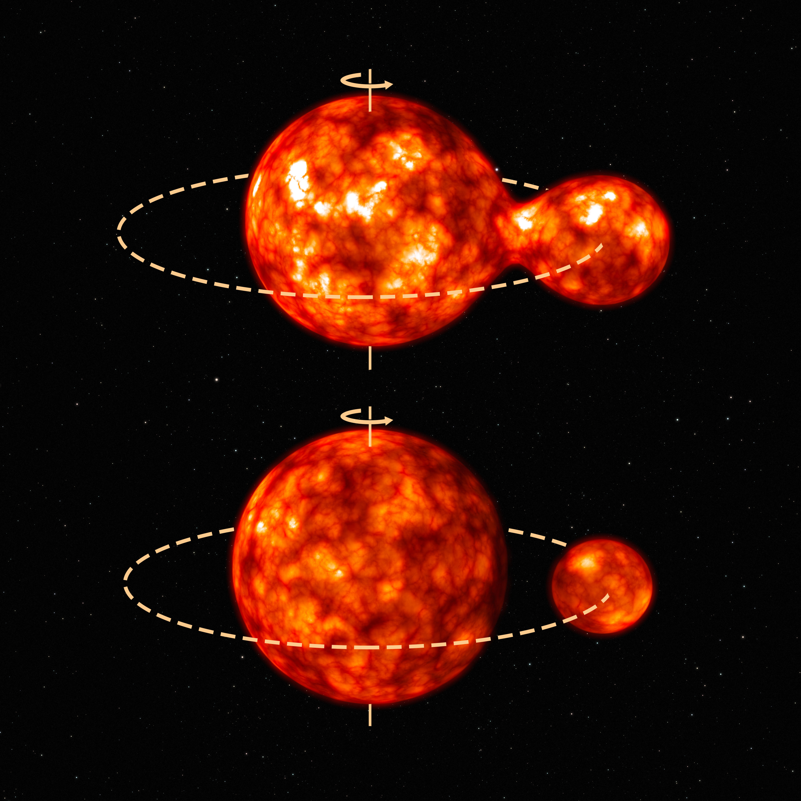
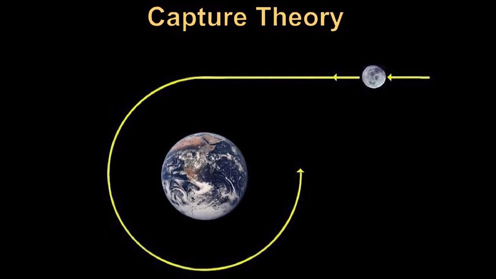
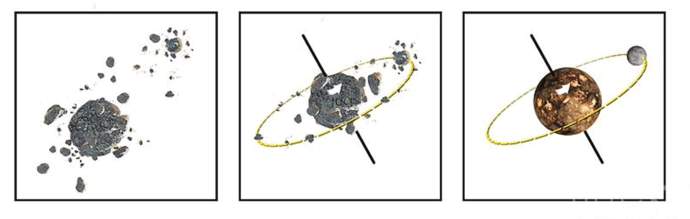
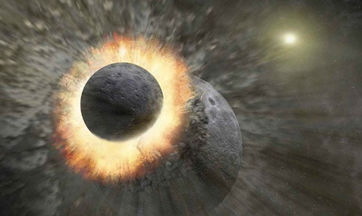

The International Moon Day
On account of International Moon Day, we present a brief overview of the formation scenarios of the Moon. We also discuss the findings of Chandrayaan.
“That’s one small step for man, one giant leap for mankind.”
This is the famous quote by Neil Armstrong during the live broadcast when he stepped on the Moon for the first time on 20 July 1969. The Apollo-11 mission was regarded as the biggest technological achievement by NASA. Armstrong and Aldrin had spent around 21 hours at a location known as Tranquility Base on the lunar surface collecting lunar samples. After spending more than eight days in space, the group returned to the planet and touched down in the Pacific Ocean on July 24. To celebrate this great feat, the United Nations marked the 20th July of every year to be celebrated as “International Lunar Day” in its resolution 76/76 on ‘International cooperation in the peaceful uses of outer space’ in 2021. To mark this day, in this article, we provide the current understanding of the formation of the most familiar astronomical object we see in the sky, the Moon and the Indian lunar missions.
Moon has been an important part of the history of mankind, be it popular literature, religion or navigation. Scientific observations of the Moon date back to the 1600s, when Galileo Galilei turned his telescope towards the Moon to reveal its surface. Contrary to the popular belief that the Moon has a smooth surface, a topology abundant with craters and mountains was received with great surprise. Since then, we have had many scientific ventures to understand the Moon in great detail. Luna-2, by the Soviet Union, was the first spacecraft to reach the Moon and Apollo-11 by the United States made the Moon the first astronomical object other than Earth, where mankind had set foot on. Many studies have revealed important aspects of the Moon. Among all that, the most interesting question is about the origin of the Moon.
George Darwin, in 1879, put forward a hypothesis about the formation of the Moon. He proposed that the Moon was formed from a piece of mass that spun off from a rapidly rotating Earth in its molten phase during planet formation. This hypothesis is called the fission hypothesis (Figure 1).

Figure 1: Distribution of offset between magnetic field direction and clump orientation. Credit: Moon formation fission.
Later, the capture hypothesis (Figure 2) suggested the possibility of capturing of the Moon during a close flyby in Earth’s gravity field. In this scenario, the Moon was believed to be formed elsewhere in the solar system.

Figure 2: Fission hypothesis. Credit: Capture Theory.
A co-accretion model (Figure 3) was suggested alternative to both the stated hypotheses. This model predicted that the Moon and Earth formed at the same location around the sun by accreting the same material.

Figure 3: Capture hypothesis Credit: Co-accretion Theory.
So far, these hypotheses started to break when we started understanding the Moon’s composition and bulk nature after the Apollo missions. The composition of the samples returned by the Apollo astronauts showed that Earth and Moon shared the same isotopic composition. And it was also seen that the Moon’s bulk iron content was less than Earth’s. The three stated hypotheses explaining the Moon’s formation could not explain these results. This led to a new hypothesis called the Giant Impact Hypothesis (Figure 4).

Figure 4: Giant Impact: An artistic impression Credit: Giant Impact Hypothesis.
In 1975, William K. Hartmann and Donald R. Davis proposed the Giant Impact Hypothesis. It explained that 4.5 billion years ago, after the Earth was formed and solidified to have a solid crust, it underwent a collision course with a Mars-sized planetesimal object which co-evolved in the neighbourhood of Earth. This impact caused rocks and debris to be collected in orbit around the Earth, and eventually, it accreted to form the Moon. This hypothesis could explain the same isotopic composition of Earth and Moon since both were created from the same material. By the time Earth had formed its solid crust (when the giant impact had happened), the heavier iron element in its composition had sunk to form an iron core of Earth. Hence, the material that was ejected from Earth’s crust and mantle as a result of impact was iron deficient. This explains the iron-poor nature of the Moon. As this impact theory can explain many known facts about the Moon, the Giant Impact hypothesis has been the long-standing theory that explains the origin of the Moon.
Understanding the global abundance of various elements and minerals on the Lunar surface will help us to validate and model the Giant Impact hypothesis. India’s moon orbiting satellite, Chandrayaan missions has significantly contributed to this direction. Chandrayaan-1 was India’s first mission to the Moon. Moon mineralogy mapper (MMM, also known as M-cube), a payload onboard Chandrayaan-1, detected the trace of water at the poles of the Moon. Another payload, C1XS (Chandrayaan-1 X-ray Spectrometer), could detect major rock-forming elements on the surface and reported the first measurement of enhanced sodium on the lunar surface. Due to the short lifespan of nine months of Chandrayaan-1 around the Moon, a global elemental map remained unachieved until India launched Chandrayaan-2 in 2019. Chandrayaan -2 was an ambitious mission that carried a lander, rover and an orbiter. The Vikram lander was designed to soft-land on the lunar surface, and the rover named Pragyan was made to traverse the lunar surface performing experiments on the surface. But unfortunately, both Vikram and Pragyan hard landed on the Moon, making them unusable. The Orbiter, which carried eight scientific payloads, orbits the Moon giving valuable scientific data since 2019. A global elemental map of various elements is awaited as a major result of Chandrayaan-2. This vital data can shed clues to validate the existing hypothesis for the formation of the Moon. These studies will help us make the biggest leap to understanding the formation scenario of the Moon.
Acknowledgement:
This article has been written with the help of Robin Thomas and Shridharan Baskaran.
202